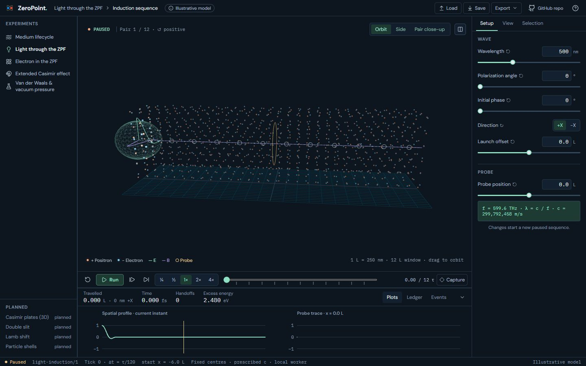
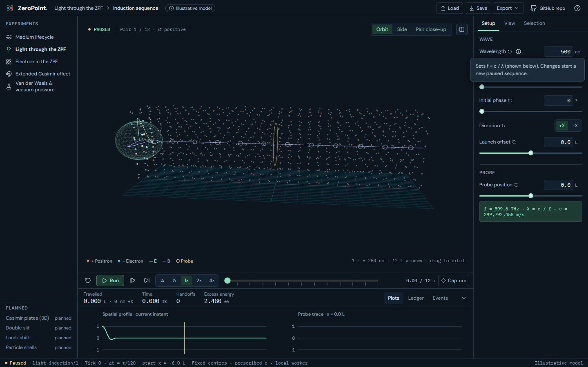
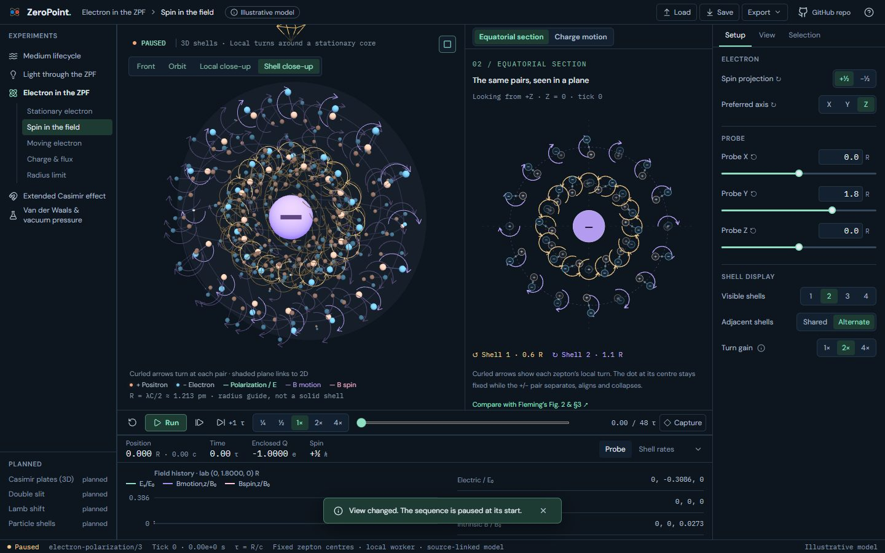
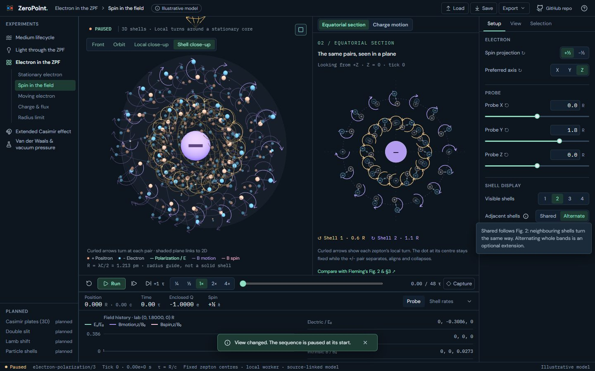
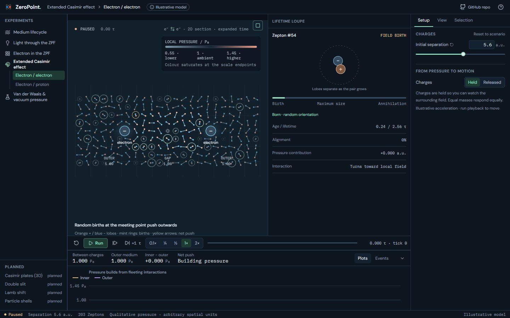
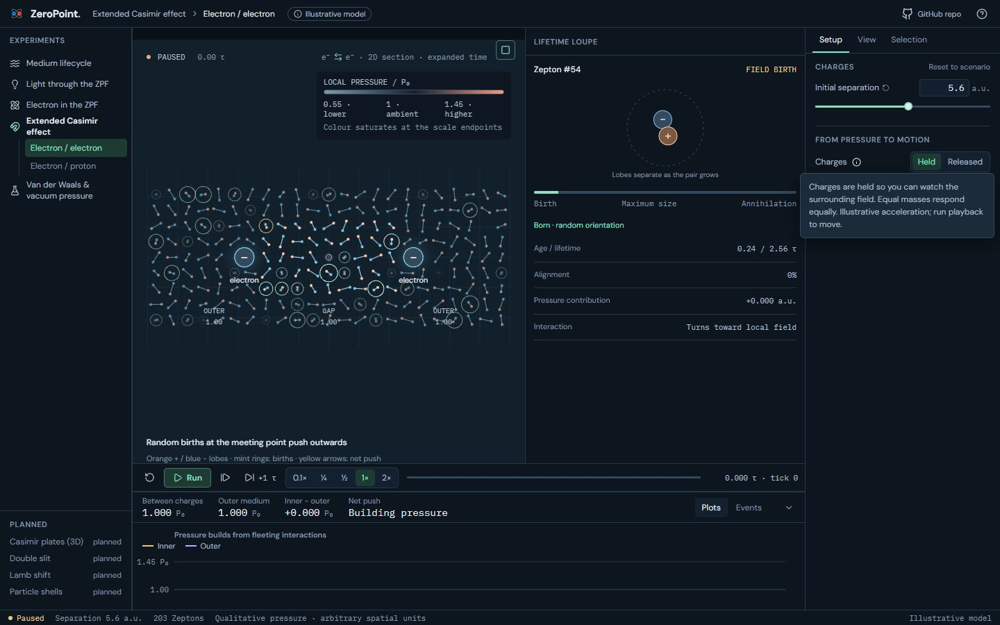
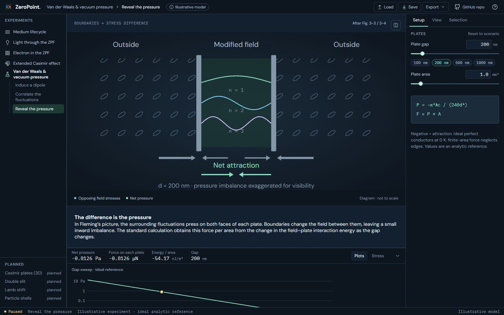
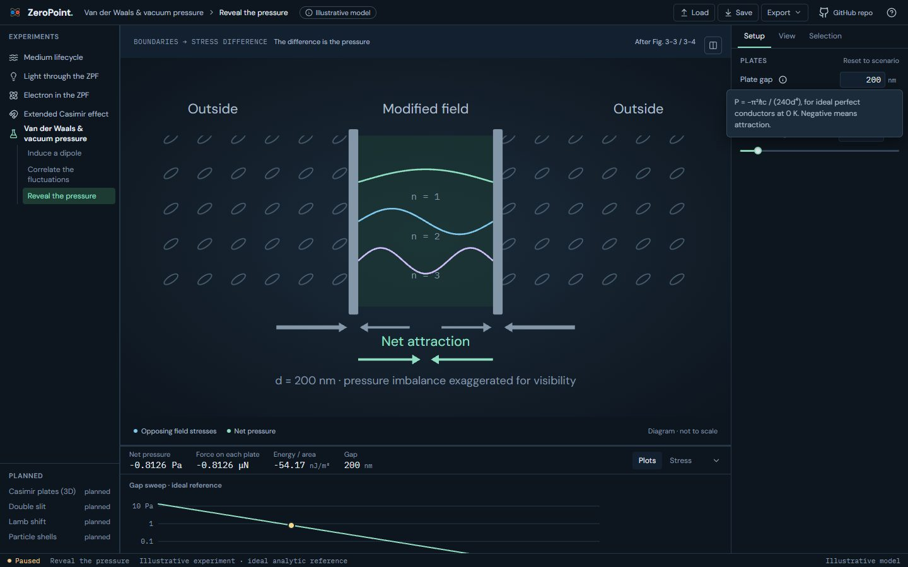

UI 14b · InfoTips: before and after
Inspector caveats become ⓘ InfoTips on the control they qualify: one or two sentences that open on click or Enter and close with Esc. The full text moves verbatim to About › This scenario, so no qualification is lost. New tips: Light Wavelength; Electron Adjacent shells, Faraday lines and Motion B; Casimir Charges, Pressure colour and Interaction arrows; van der Waals Applied field, Pair separation, Plate gap, Plate area (each with its equation) and Cavity modes. Van der Waals' stage explanation leaves the viewport: its heading joins the card label, and its paragraph, equation box and note go to About. Casimir's 'Click a pair to inspect' hint is cut, as planned.
Real screens: "before" runs the layer below, and "after" runs this layer. Click an image to open it at full size. Regenerate with node scripts/compare-screens.mjs.
Light · Wavelength ⓘ (was a note under Setup)




Electron · Spin: Adjacent shells ⓘ




Extended Casimir · Charges ⓘ (was two lines under Charges)




Van der Waals · Plate gap ⓘ, with the stage heading in the card label (the equation box, note and explanation moved to About)



